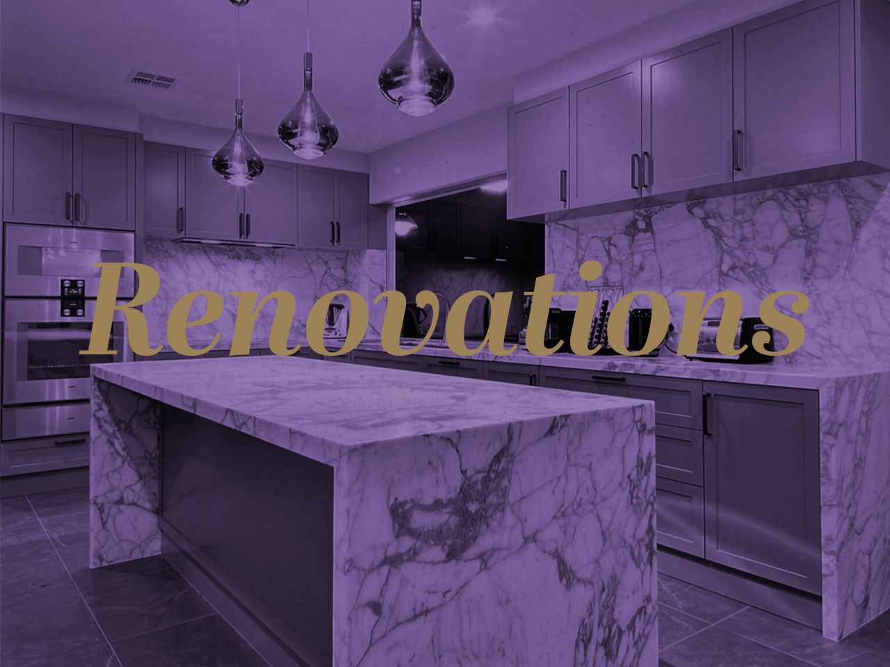
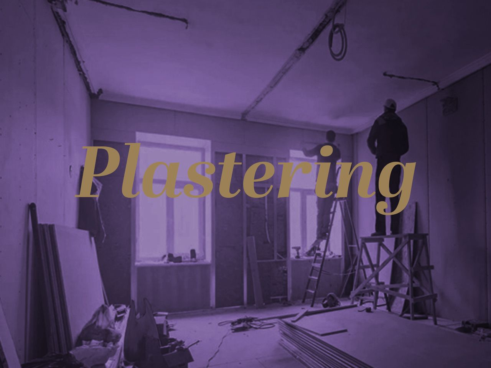
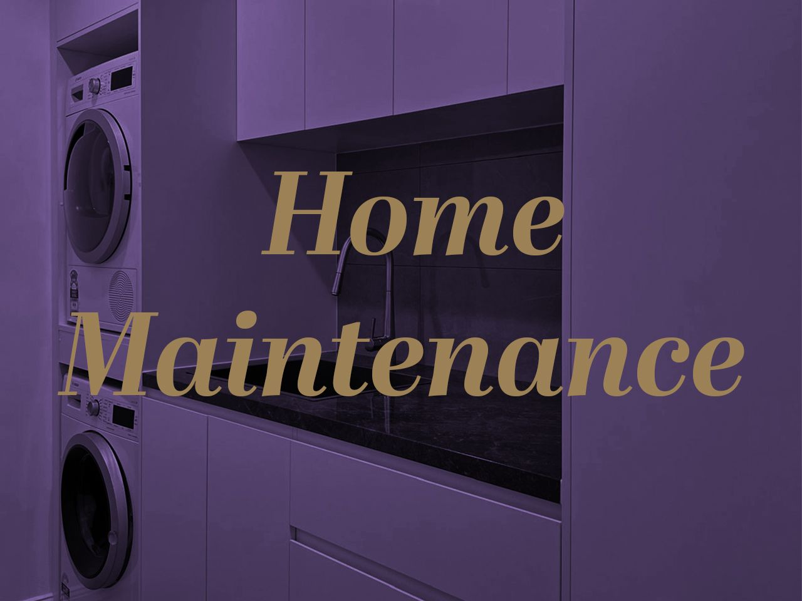

Services
One team for repairs, renovations, painting, roofing and maintenance.
Wally's Executive Home Management brings Canberra property owners a practical multi-trade service without forcing every job into a single category.

Priority work
Roof Repairs & Restoration
For leaks, broken tiles, ridge capping, rebedding, repointing, mould removal, pressure cleaning, roof painting and restoration work.
- Leak tracing
- Tile replacement
- Ridge capping
- Rebedding and repointing
- High pressure cleaning
- Roof restoration
Ask about roof repairs

Finish work
Painting & Decorating
Interior and exterior painting with proper surface preparation, decorative finishes, timber finishing, protective coatings and practical colour advice.
- Interior painting
- Exterior repainting
- Feature walls
- Decorative finishes
- Timber finishing
- Commercial repainting
Ask about painting

Timber work
Carpentry & Decking
Detailed timber repairs, decks, pergolas, verandas, doors, screens, built-ins and structural fixes across residential and commercial jobs.
- Deck repairs
- Rot repairs
- Doors and screens
- Verandas and pergolas
- Custom carpentry
Ask about carpentry

Renovation work
Bathroom, Kitchen & Laundry Renovations
Refresh tired bathrooms, kitchens and laundries with quality craftsmanship, clear project management and coordinated trades.
- Bathrooms
- Kitchens
- Laundries
- Tiling coordination
- Fixture and finish advice
Ask about renovations

Repair work
Plastering & Wall Repairs
Repair damaged walls and ceilings, smooth old surfaces and prepare rooms properly before painting or renovation work.
- Wall repairs
- Ceiling repairs
- Water damage repair
- Patch and smooth work
- Pre-paint preparation
Ask about plastering

Ongoing property care
Repairs & Property Maintenance
General repairs, pre-sale makeovers, rental property upkeep and multi-trade fixes that need someone experienced to coordinate.
- Pre-sale repairs
- Tiling services
- Outdoor sheds and carports
- Door and window repairs
- Commercial repairs
Ask about maintenance
Not sure where your job fits?
Start with the property problem, not the trade name.
Many jobs need more than one trade. Tell Wally what is leaking, damaged, worn, unfinished or ready to improve, and he can point you toward the practical next step.
Painting proof
Master Painters Australia ACT awards for excellence.
2014Timber finishing, domestic heritage and restoration project.
2015Decorative finishes, commercial.
2015Commercial repaint recognition.